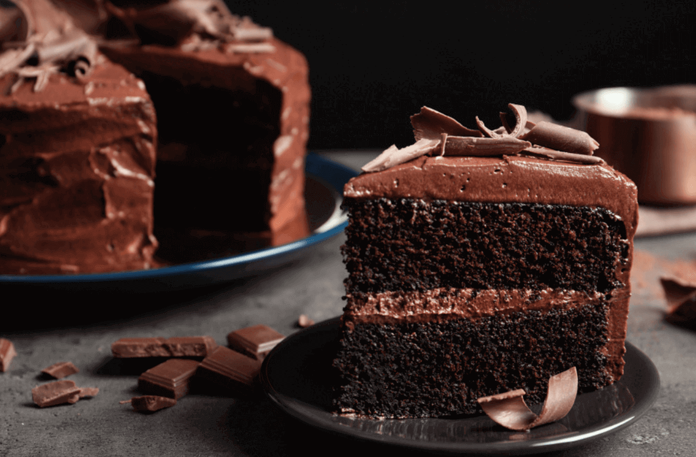

Let's start.

Resepi Kek Coklat
Bahan-bahan penyediaannya
BAHAN A:
1 cawan gula halus
1 cawan serbuk koko
1 cawan susu cair
1 cawan minyak masak
1/2 cawan susu pekat manis
(Campur semua bahan A. Masak atas api kecil hingga larut.)
BAHAN B:
1 cawan tepung gandum
1 sudu teh soda bikarbonat
1 sudu teh baking powder
(Satukan bahan B. Ayak.)
BAHAN C:
3 biji telur
1 sudu teh esen vanilla
(Masukkan ke dalam blender. Kisar sampai putih.
Cara penyediaan
- Masukkan bahan A ke dalam bahan B.
- Kemudian masukkan bahan C. Guna pemukul (whisk) sahaja dan bancuh sehingga sebati dan tiada ketulan tepung.
- Panaskan periuk kukusan, tuang adunan kek ke dalam bekas kecil seperti dalam gambar dan kukus selama 15 minit. Angkat dan sejukkan terlebih dahulu.
Kek Batik